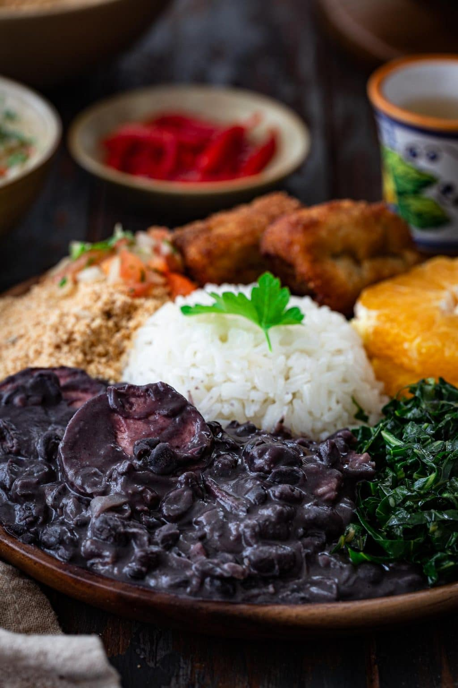

Feijoada

Description
Feijoada, pronounced fay-jwah-dah, is considered Brazil’s national dish. The name comes from the word feijão, which means bean, an essential ingredient of the dish. Black beans, salted beef and pork come together in a hearty slow cooked stew, traditionally served with rice, collard greens and farofa (toasted manioc flour).
Ingredients
- Beans
- Onion and garlic
- Bacon
- Salted beef and pork
- Orange
- Oil
- Bay leaves
- Salt and pepper
Steps
- Soak the meat for 24 hours (changing the water 3-4 times) and beans overnight.
- Using the sauté mode (medium), add the oil and, once shimmering, sauté the bacon until cooked through but not crispy, about 5 minutes. Then, add the onions and garlic and sauté until softened, scraping the bottom of the pot to loosen any browned bits, about 5 more minutes. Remove with a slotted spoon and reserve.
- Add the meat and pour enough water so it’s submerged. Lock the lid on the Instant Pot and cook at high pressure for 5 minutes. Then, let the pressure come down naturally, drain and reserve the meat. (This step is not needed if substituting the traditional salted meats.)
- Combine the soaked and drained beans, reserved carne seca, orange and bay leaves in the Instant Pot insert. Cover with cold water, lock the lid and pressure cook on high for 20 minutes.
- Let the pressure release naturally, open the lid and add the reserved sausages, adding more water if necessary. Cover and cook on high for another 15 minutes. At this point, the meat and beans should be tender. If not, continue cooking in increments of 5 minutes until they are. Skim off any excess fat that has risen to the top.
- Remove the orange and bay leaves, and discard. Remove the meat and cut into smaller chunks. Reserve.
- Remove a ladleful of the beans, without liquid, and combine with the reserved bacon and onion mixture. Mash the beans with a fork, forming a paste.
- Add that paste to the stew and set the Instant Pot to sauté mode. Cook until the stew thickens to the desired consistency. Taste and adjust salt and pepper as needed.
- Add the meat back and serve.